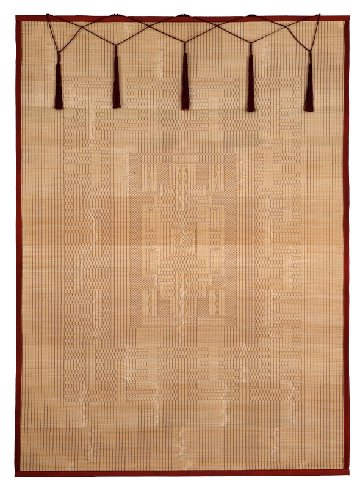

염장
대나무, 갈태 등을 사용해 발을 엮는 기술

제작과정
발은 주로 대나무를 가늘게 쪼개어 얻은 대오리를 삼끈이나 실로 엮고 바탕 면에 여러 가지 무늬를 놓은 뒤 윤곽을 남색 모단 등의 천으로 둘러 마감하는 공정을 거쳐 제작된다.
사용재료
대나무(대나무발), 갈태(갈대발), 겨릅(겨릅발), 달풀(달발) 등이 사용된다.
특징
발 중에서도 마디를 문채 삼아 무늬를 잔잔하게 구성하는 구갑문 발은 대오리가 가늘고 세밀하여 궁궐에서 즐겨 쓸 만큼 품질이 좋았다. 발에 새기는 무늬는 이밖에도 囍(쌍희)자, 福(복)자, 卍(만)자 등 壽福康寧(수복강녕) 등의 길상문자문이 즐겨 쓰였으며, 양쪽 귀에 매듭을 드리워 멋을 내기도 하였다.
전승자
| 보유구분 | 이름 | 성별 | 기예능 | 지역 | 인정일 |
|---|---|---|---|---|---|
| 보유자 | 조대용 ( 趙大用 ) | 남 | 대발제작 | 경남 | 2001-06-27 |
| 전승교육사 | 조숙미 ( 趙淑美 ) | 여 | 대발제작 | 경남 | 2022-08-09 |
소재지
경남